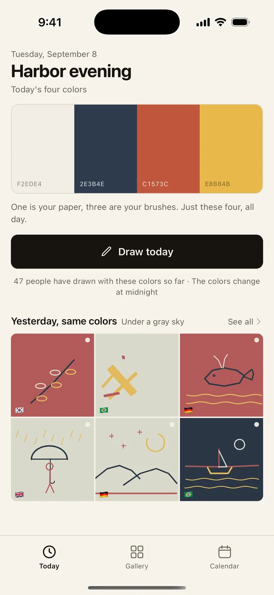
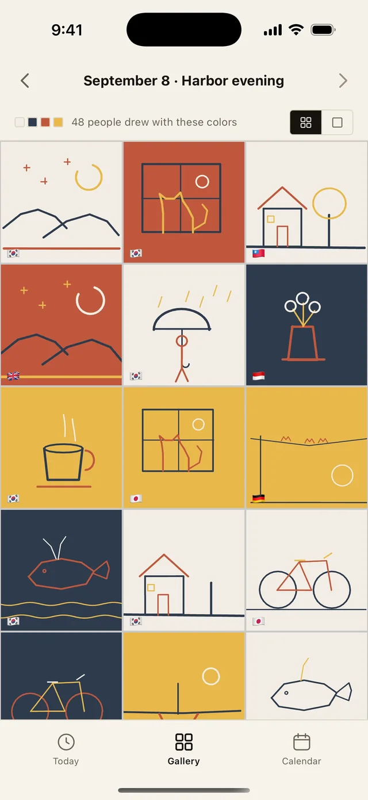
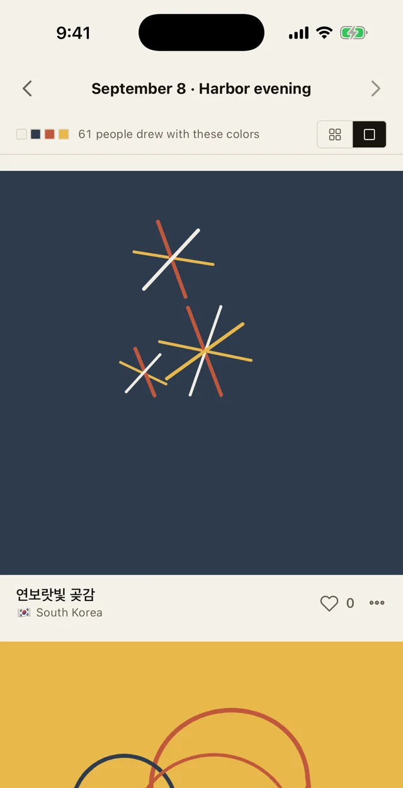
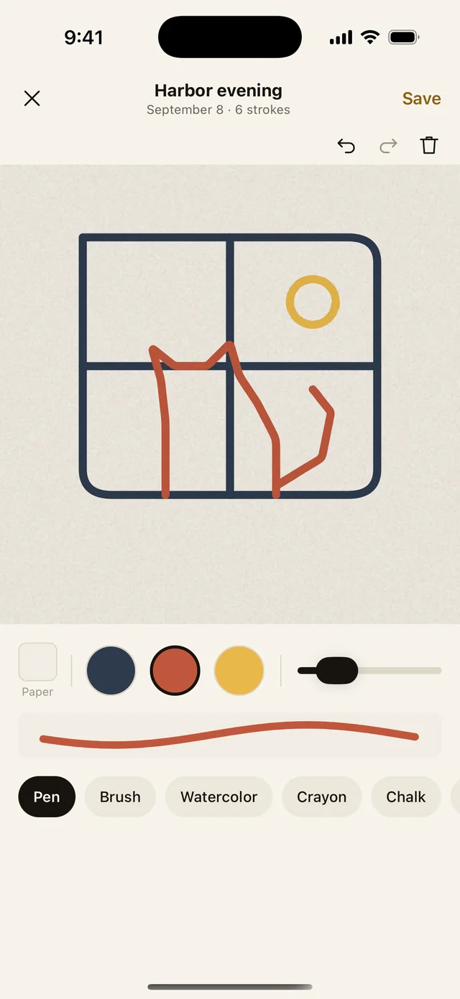

Today's colors.
One drawing a day.
Four colors arrive every day, the same four for everyone in the world. One is your paper, three are your brushes. Just these four, all day.
Free No sign-up, no login iPhone · English, 한국어, 日本語
These are today's real colors, the same ones the app hands out. They change at midnight, your local time.

Try it here
Draw something with today's four.
Pick one as paper, draw with the other three. Only a pen here — the app has six brushes, zoom, undo, and saves every stroke so the drawing can be replayed.
Nothing you draw here is uploaded. It stays on this page.
Three rules
Four colors. One is paper. Midnight.
-
Four colors a day, for everyone
Tokyo, São Paulo, Seoul — the same four. Every palette was chosen by hand and has a name.
-
One is your paper, three are your brushes
You choose which one becomes the paper. Painting with the paper color is your eraser.
-
The colors change at midnight
One drawing per day. Miss a day and the calendar just has a gap — no streak lost, no penalty.
Same colors, different days
See what the world drew with the same four.
The gallery opens after you draw.
Today's drawings are shown only to people who drew today, so nobody copies. Yesterday and before are open to everyone. Each drawing carries a small flag for where it came from.

Watch it being drawn.
Every stroke is saved, so any drawing can be replayed from the first line to the last. You see the order, the hesitation, the fix.

Drawing
Six brushes, two fingers to zoom.
Pen, brush, watercolor, crayon, chalk and dry brush. Pinch to zoom up to five times for detail. Undo, redo, clear. The paper texture is laid on top when you look, not baked into the file.
Brush sizes stay wide enough that letters can't be written — it's a drawing app, not a message board.

Calendar
Your days stack up in color.
Every drawing lands on its day. Open one to replay it, export it, or delete it. The export is the drawing, the four-color band, and the date — no app name, no link.
A few of the named palettes. The month below shows the real colors scheduled for each day.
Kept simple
No account. No words. Just drawings.
-
No sign-up
Open and draw. You get a name like "Olive Heron" — you don't pick it, and it stays with you.
-
Drawings only, no text
No comments, no captions. Brushes are too wide to write with. Likes are a number, nothing more.
-
Report, hide, delete
Report a drawing and it's hidden right away until a person checks. Hide someone and they're gone from your gallery. Delete your own any time.
-
Missed a day? Draw it later
Unlock a past day by watching one short ad. That's the only ad in the app — no banners, nothing in the drawing screen.
Questions
Good to know
When do the colors change?
At midnight, your local time. If you start a drawing before midnight, you have 30 minutes after to finish it as that day's drawing.
Can I draw more than once a day?
One drawing per day. If you delete today's, you can draw again the same day.
Is it free?
Yes. Drawing, the gallery, the calendar and export are free. Drawing a past day costs one short ad.
Which languages and devices?
English, Korean and Japanese. iPhone for now; Android depends on how the first months go.
Where do the colors come from?
From a hand-picked pool built on Sanzo Wada's 1930s color dictionary. Combinations were generated by rules, then a person chose and named each one.